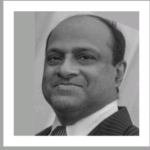
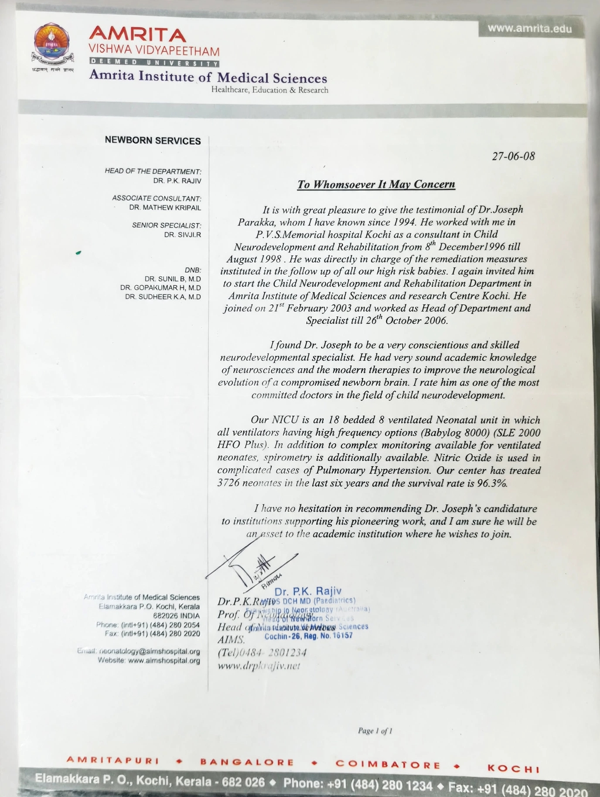

Society for Total Human Development & Rehabilitation
Consultant - Dr. Joseph Parakka | M.B.B.S, Specialized in Child Neurodevelopment & Rehabilitation

Consultant – M.B.B.S
Specialized in Child Neurodevelopment & Rehabilitation
( Four years' specialized training in Child Neurodevelopment & Rehabilitation, under an Indo-German Project by Kinderzentrum-Munich). Former H.O.D & Specialist : Dept of Child Neurodevelopment & Rehabilitation, Amrita Institute of Medical Sciences & Research Center-Kochi (Medical College cum University)
Ph: 9401363040 / 9004557298 | dr.parakka@gmail.com
Above Axis Bank-Vakola, 49, Nehru Road, Santacruz-east
Opposite Canara Bank-Kalina Market, Shop number-3, Pawar house, Santacruz-east
Testimonial from Amrita Institute of Medical Sciences, Kochi - Dr. P.K. Rajiv, Head of Newborn Services

Former Head of Department, Child Neurodevelopment & Rehabilitation, AIMS Kochi (2003-2006)
For appointments and queries, contact us directly:
📞 Call: 9401363040📞 Call: 9004557298Email: dr.parakka@gmail.com